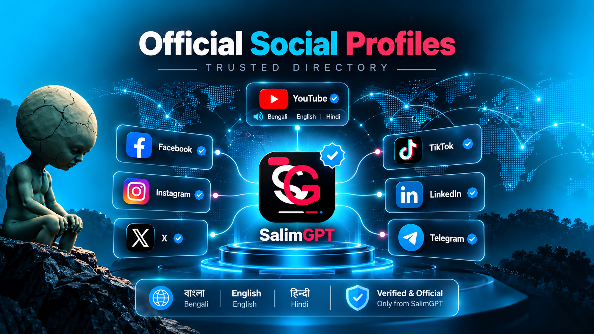

Central YouTube Presence
SalimGPT's primary documentary video model is built around one main YouTube channel with multi-language audio where supported.
SALIMGPT GLOBAL
SalimGPT uses official social profiles to distribute, introduce and connect audiences with its research-based documentary media across different languages and platforms.
Unlike the main YouTube model, which is centered on one primary SalimGPT channel with multi-language audio where supported, social media profiles can be organized by language so communication and discovery can be presented naturally for each audience.
OFFICIAL NETWORK
SalimGPT's global distribution structure separates the central documentary video destination from language-specific social communication where appropriate.
SalimGPT's primary documentary video model is built around one main YouTube channel with multi-language audio where supported.
Other social platforms can use dedicated profiles for different language audiences where that structure improves communication and discovery.
Language-specific profiles remain part of the same SalimGPT documentary media brand rather than becoming unrelated media identities.
Captions, announcements, contextual explanations and audience communication can be presented naturally for each language community.
Official pages should connect audiences back to recognized SalimGPT web, documentary or distribution destinations rather than isolated identities.
New profiles or platform presences can be introduced when a language audience or distribution need justifies an official SalimGPT presence.
OFFICIAL DIRECTORY
This page is intended to serve as the trusted directory for official SalimGPT social destinations. Individual platform links should only be added after the exact profile address has been confirmed.
Until a profile is explicitly listed through an official SalimGPT destination, audiences should avoid assuming that an account using the SalimGPT name, logo or similar branding is part of the official network.

IDENTIFYING AUTHENTIC PROFILES
Names, profile images and visual branding can be copied. A stronger way to identify an official SalimGPT account is to follow links published through SalimGPT-owned web pages and other recognized official destinations.
When an official social profile is added or changed, the corresponding SalimGPT directory can be updated so audiences have a consistent reference point.
BEFORE YOU TRUST A PROFILE
Social platform verification systems and account presentation can change. The most reliable reference is the network of destinations published directly by SalimGPT.
Prefer a profile URL reached directly from an official SalimGPT website or directory page.
Confirm that the profile's language and presentation correspond with the SalimGPT edition it claims to represent.
Official profiles should fit within the wider SalimGPT network rather than appearing as isolated accounts with no recognized connection.
If a profile link, username or platform presence appears inconsistent, return to SalimGPT's official web directory before relying on it.
LANGUAGE NETWORK
Bengali, English and Hindi are currently available SalimGPT language editions. Their dedicated web environments provide the appropriate starting point for language-specific discovery.
Bengali Edition
বাংলা SalimGPT পরিবেশ থেকে ভাষাভিত্তিক ডকুমেন্টারি ও অফিসিয়াল গন্তব্য আবিষ্কার করুন।
English Edition
Use the English edition for SalimGPT documentary discovery and English-language audience access.
Hindi Edition
हिन्दी SalimGPT वातावरण से डॉक्यूमेंट्री और भाषा-विशिष्ट आधिकारिक गंतव्यों को खोजें।
YOUTUBE IS DIFFERENT
SalimGPT's YouTube structure is not based on creating a separate primary channel for every language. The central model uses one main channel, with additional documentary audio languages provided where supported and available.
Learn About Multi-Language Audio →GLOBAL SALIMGPT
Official social profiles work alongside language editions, YouTube multi-language audio and SalimGPT's broader documentary distribution destinations.
Explore SalimGPT's dedicated multilingual web environments.
Understand SalimGPT's centralized multilingual documentary video model.
Find the official paths used to watch and discover SalimGPT documentary media.
Open the broader multilingual discovery gateway for SalimGPT.